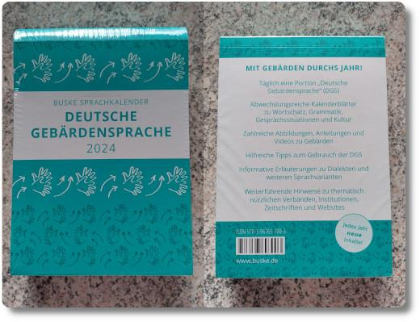

Gebärden-Kalender für 2024
Wir sind ja Fans von Abreißkalendern. Im letzten Jahr wurden wir jedoch herb enttäuscht, denn der Kalender für 2023 strotzte nur von nervigen Rätseln, schlechten Witzen und sogar falschen Knobelaufgaben. Beispielsweise waren mehrere Sudokus fehlerhaft und damit nicht lösbar. Auch Torsten Gaitzsch hatte damit so seine Probleme. Und überhaupt! Warum schaffen es die Hersteller dieser ganz einfachen Abreißkalender es nicht, Vorder- und Rückseite so abzudrucken, dass man die Information über den aktuellen Tag am selben(!) Tag ließt, und nicht erst einen Tag später? Habt ihr euch das auch schon gefragt?
Naja, wie auch immer. Für 2024 haben wir uns in der Buchhandlung einen besonderen Kalender bestellt: Einen Gebärdensprachkalender! Jeden Tag eine neue Lektion über die Deutsche Gebärdensprache (DGS).
Das wird richtig spannend. In der Volkshochschule in Dreieich haben wir Anfang des Jahres einen ganz tollen Kurs über die DGS mitgemacht und sind so auf den Buske-Verlag gestoßen, der diesen Kalender vertreibt. Wie bei jeder Sprache braucht man bei der DGS immer wieder Übung, sonst verlernt man alles ganz schnell.
Hier ein kleines Bonmot aus der Geb√§rdensprache: Habt ihr gewusst, dass das Symbol ü§ü (Ausgestreckter Daumen, Zeigefinger und kleiner Finger) f√ºr I-Love-You steht? Denn die Geste sind die gleichzeitige Anzeige von drei Buchstaben: Dem I (kleiner Finger), dem L (Zeigefinger und Daumen) und dem Y (kleiner Finger und Daumen).